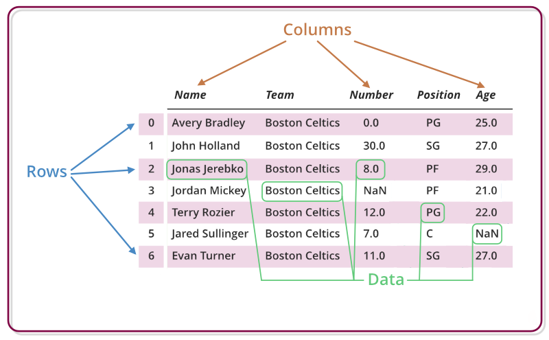
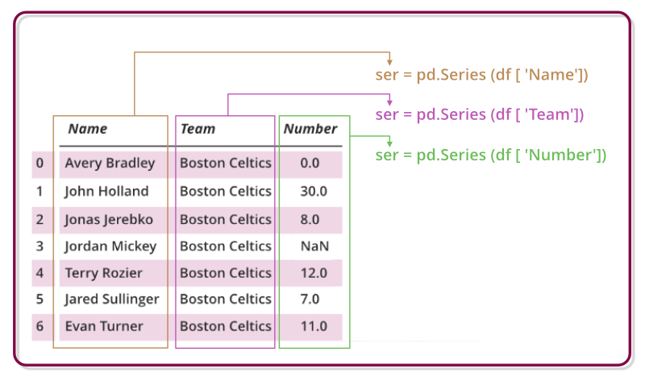

The pythonic portal to be a Kungfu pandas
What is Panda ?:
Pandas is an open-source Python Library providing high-performance data manipulation and analysis tool using its powerful data structures, is one of the most widely-used Python libraries in data science and analytics, This library is built on top of the NumPy library.
Why Pandas is used for Data Science ?:

panda are generally used for data science but have you wondered why?
This is because pandas are used in conjunction with other libraries that are used for
data science. It is built on the top of the NumPy library which means that a lot of
structures of NumPy are used or replicated in Pandas. The data produced by Pandas are
often used as input for plotting functions of Matplotlib, statistical analysis in SciPy,
machine learning algorithms in Scikit-learn.
+ Advantages
1 - Fast and efficient for manipulating and analyzing data.
2 - Data from different file objects can be loaded.
3 - Easy handling of missing data in floating point as well as non-floating point data
4 - Size mutability , columns can be inserted and deleted from DataFrame and higher dimensional objects
5 - Data set merging and joining.
6 - Flexible reshaping and pivoting of data sets
7 - Provides time-series functionality.
8 - Powerful group by functionality for performing split-apply-combine operations on data sets.
+ install panda
Standard Python distribution doesn't come bundled with Pandas module. A lightweight alternative is to install NumPy using popular Python package installer, pip.
pip install pandas
If you install Anaconda Python package, Pandas will be installed by default with the following.
+ Windows :
- Anaconda: is a free Python distribution for SciPy stack. It is also available for Linux and Mac.
- Canpy: is available as free as well as commercial distribution with full SciPy stack for Windows, Linux and Mac.
- Python (x,y): is a free Python distribution with SciPy stack and Spyder IDE for Windows OS.
Data Structures

Pandas deals with the following three data structures:
- Series : 1 Dimension.
- DataFrame : 2 Dimension.
- Panel : 3 Dimension.
These data structures are built on top of Numpy
array, which means they are fast.
The best way to think of these data structures is that the higher dimensional data structure
is a container of its lower dimensional data structure. For example, DataFrame is a container
of Series, Panel is a container of DataFrame.
- DataFrame :
Pandas DataFrame is a two-dimensional size-mutable, potentially heterogeneous tabular data structure with labeled axes (rows and columns). A Data frame is a two-dimensional data structure, i.e., data is aligned in a tabular fashion in rows and columns. Pandas DataFrame consists of three principal components, the data, rows, and columns. A pandas DataFrame can be created using the following constructor
pandas.DataFrame( data, index, columns, dtype, copy)
- Creating a DataFrame :
In the real world, a panda DataFrame will be created by loading the datasets
from existing storage, storage can be SQL Database, CSV file, an Excel file. Pandas DataFrame
can be created from the lists, dictionary, and from a list of dictionaries, etc.
#import pandas
import pandas as pd
# Calling DataFrame constructor
data = pd.DataFrame()
print(data)
# list of strings
lst = ['Do', 'Flam', 'ingo', 'is',
'the', 'king', 'pirates',
'of', 'pythonline']
# Calling DataFrame constructor on list
data = pd.DataFrame(lst)
print(data)
Output :
Empty DataFrame
Columns: []
Index: []
0
0 do
1 Flam
2 ingo
3 is
4 the
5 king
6 pirates
7 of
8 pythonline
Select an Index or Column From a Pandas DataFrame selecting an index, column or value from your DataFrame isn’t that hard, quite the contrary. It’s similar to what you see in other languages or packages, that are used for data analysis
# Using 'iloc[]'
print(data.iloc[0][0])
# Using 'loc[]'
print(data.loc[0]['A'])
# Using 'at[]'
print(data.at[0,'A'])
# Using 'iat[]'
print(data.iat[0,0])
Output :
1
1
1
1
The most important ones to remember are, without a doubt, .loc[] and .iloc[]
#print the row 0
print(data.iloc[0])
#print column the column A
print(data.loc[:,'A'])
Output :
A 1
B 2
C 3
Name: 0, dtype: int64
0 1
1 4
2 7
Name: A, dtype: int64
- Add an Index, Row or Column to a Pandas DataFrame
- Adding an Index to a DataFrame When you create a DataFrame, you have the option to add input to the 'index' argument to make sure that you have the index that you want.
# Print out your DataFrame
print(data)
#index of your DataFrame
data.set_index('C')
However, even when your index is specified for you automatically, you still have the power to re-use one of your columns and make it your index. You can easily do this by calling set_index() on your DataFrame.
Output :
A B C
0 1 2 3
1 4 5 6
- Adding Rows to a DataFrame :
the concept of loc and how it differs from other indexing attributes such as .iloc[] and .ix[]:
- .loc[] : works on labels of your index.
- .iloc[] : works on the positions in your index.
- .ix[] : is a more complex case: when the index is integer-based, you pass a label to .ix[].
data = pd.DataFrame(data=np.array([[1, 2, 3], [4, 5, 6], [7, 8, 9]]), index= [2, 'A', 4], columns=[48, 49, 50])
# print the first column
print(data.loc[2])
# print the third column
print(data.iloc[2])
# print the third column
print(data.ix[2])
output
48 1
49 2
50 3
Name: 2, dtype: int64
48 7
49 8
50 9
Name: 4, dtype: int64
48 7
49 8
50 9
Name: 4, dtype: int64
- Adding a Column to Your DataFrame :
take a column from your DataFrame or by referring to a column that
you haven’t made yet and assigning it to the .index .
#create your dataframe
data = pd.DataFrame(data=np.array([[1, 2, 3], [4, 5, 6], [7, 8, 9]]), columns=['A', 'B', 'C'])
# indexing to 'D'
data['D'] = data.indDex
# Print the datafram
print(data)
Output :
A B C D
0 1 2 3 0
1 4 5 6 1
2 7 8 9 2
- append columns to your DataFrame :
use .loc[] or .iloc[].
In this case, you add a Series to an existing DataFrame with the help of .loc[]
# Study the DataFrame 'data'
print(data)
# Append a column to 'data'
data.loc[:, 4] = pd.Series(['5', '6'], index=data.index)
# Print out 'data'
print(data)
Output :
1 2 3
0 1 1 2
1 3 2 4
1 2 3 4
0 1 1 2 5
1 3 2 4 6
Remember a Series object is much like a column of a DataFrame. That explains why you can easily add a Series to an existing DataFrame.
- Series :

Series is a one-dimensional labeled array capable of holding
data of any type (integer, string, float, python objects, etc.).
The axis labels are collectively called index.
A pandas Series can be created using the following constructor
pandas.Series( data, index, dtype, copy)
Example :
#import numpy and panda
import pandas as pd
import numpy as np
# Make empty series
serie = pd.Series()
#print serie
print(serie)
# simple array
data = np.array(['d', 'o', 'f', 'l', 'a', 'm', 'i', 'n', 'g', 'o'])
ser = pd.Series(data)
print(serie)
Output :
Series([], dtype: float64)
0 d
1 o
2 f
3 l
4 a
5 m
6 i
7 n
8 g
9 o
dtype: object
- Accessing element of Series :
you can access its indexes, data, and even individual elements.
The data in the Series can be accessed similar to that in the ndarray.
import pandas as pd
serie = pd.Series([1,2,3,4,5,6,7,8,9,10],index = ['d','o','f','l','a','m','i','n','g','o'])
#retrieve the first element
print serie[0]
Output :
D
- Retrieving Index and data of a series :
retrieve the index array and data array of an existing Series object by
using the attributes index and values.
#import numpy and pandas
import numpy as np
import pandas as pd
#Make series
exp_x=pd.Series(data=[1,3,5,7])
exp_y=pd.Series(data=[91.2,11.6,42.6,15.4,41.2,12.1,34.8,91.4,12.4,44.6], index=['d','o','f','l','a','m','i','n','g','o'])
#print index and value exp_x
print(exp_x.index)
print(exp_x.values)
#print index and value exp_y
print(exp_y.index)
print(exp_y.values)
Output :
RangeIndex(start=1, stop=11, step=1)
[1 3 5 7]
Index(['d','o','f','l','a','m','i','n','g','o'], dtype='object')
[91.2 11.6 42.6 15.4 41.2 12.1 34.8 91.4 12.4 44.6]
- Retrieving Dimension ,Size and Number of bytes :
#import numpy and pandas
import numpy as np
import pandas as pd
exp_a=pd.Series(data=[1,2,3,4])
exp_b=pd.Series(data=[4.9,8.2,5.6],index=['x','y','z'])
#printing number of dimensions and number of elements in this object
print(exp_a.ndim, exp_b.ndim)
print(exp_a.size, exp_b.size)
print(exp_a.nbytes, exp_b.nbytes)
Output :
1 1
4 3
32 24
- Most Important Pandas Functions
:
1-read_csv:
read_csv() function helps read a comma-separated
values (csv) file into a Pandas DataFrame.
2-describe:
describe() is used to generate
descriptive statistics of the data in a Pandas DataFrame or Series.
It summarizes central tendency and dispersion of the dataset.
data.describe()
Output :
Age City temp Salary
count 9.000000 8.000000 9.000000
mean 32.000000 38.575000 44444.444444
std 5.894913 1.771803 21360.659582
min 23.000000 35.500000 18000.000000
25% 29.000000 38.300000 35000.000000
50% 32.000000 38.950000 40000.000000
75% 38.000000 39.175000 52000.000000
max 39.000000 41.100000 85000.000000
3-memory_usage
memory_usage() returns a Pandas Series having the memory usage
of each column (in bytes) in a Pandas DataFrame.
data.memory_usage(deep=True)
Output :
Index 80
Name 559
Age 72
City 578
State 584
DOB 603
Gender 553
City temp 72
Salary 72
dtype: int64
4-head()
head(n) is used to return the first n rows of a
dataset. By default, data.head() will return the first 5 rows of the DataFrame.
data.head(4)
Output :
Name Age City Place DOB gnd temp Salary
0 salim 29 meknes berima 30-08-1994 Male 33.5 75000
1 aslan 23 dakhla palmas 11-12-1977 Male 34.0 95000
2 hamza 35 casa cali 07-04-2000 Male 31.7 91000
3 mehdi 25 rabat agdal 10-02-1991 Male 35.5 83000
5-groupby
groupby() is used to group a Pandas DataFrame by 1 or more columns, and perform some mathematical operation on it.
data.groupby(by='State').Salary.mean()
output :
City
dakhla 18000
casablanca 18500
rabat 27500
marrakech 50000
meknes 25000
fes 40000
Name: Salary, dtype: int64
+ Source
+ exercice
+ Conclusion
As a beginner, you have to focus on these basics and I promise you that you will become kungfu pandas with practice, I also recommend that you read pandas documentation To expand your knowledge and wait for us in the next articles where we will delve more in the field of data science and data analysis